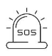
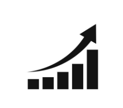

Building a
Food-Secure Nigeria
Through Research,
Awareness and
Sustainable Action.
We promote practical solutions to food insecurity
by addressing rising food prices, crop dioeases.
agricultural challenges and inclusive participation
in farming.
About Us
Who We Are
We are a non-profit organization committed to improving
food securiity in Nigerla through research, education
advocacy and inclusive agricultaral development
Our goal la to bulld a resltent food system that
ensures nutritious food for all.


Mission
To promote sustainable agriculture and practical solutians that imgrove food security in nigeria
Our Vision
A Nigeria where everyone has access to safe nutrition and affordable food all year.

Our Values
Integrity, Collaboration Inclusiveness, Innovation and Sustainability.
Why Food Security
Why It Matters
Food security is more than availability of food
It is about ensuring that every nigerian has access
to nutricious food at all times.
when food security is threatened, It affects health,
education, economic growth and national stability.


Rising Food Prices
Food Inflation continues to rise, making food unaffordable for millions

Climate Change
Unpredictable weather patterns reduce crop yields and productivity.

Our Values
Conflict and Insecurity disrupt farming an food distribution.

Poor Infrastructure
Poor roads and storage facilities increase post harvest losses.

Limited Access
Farmers have Limited access to finance. modern tools and inputs.

15.93%
Food Inflation (Year on Year)
25+ Million
Nigerians facing Food Insecurity
36
States Affected
N10,000+
Average monthly food Cost increase
Projects


Inclusiveness
At the Food Security, Nutrition and Livelihoods Initiative (FSNLI), we believe that achieving sustainable food security requires the active participation and empowerment of all members of society, particularly women and young people who play a critical role in food production, processing, distribution, and household nutrition.
Despite their significant contributions to agriculture and rural economies, women and youth often face barriers to accessing land, finance, technology, skills development, markets, and decision-making opportunities. These challenges limit productivity, reduce economic opportunities, and contribute to food insecurity and unemployment.
Our Inclusiveness focus area is dedicated to creating equitable opportunities that enable women and youth to become active participants and leaders in resilient food systems. Through capacity building, entrepreneurship support, data-driven interventions, skills development, and strategic partnerships, we seek to strengthen their ability to contribute to agricultural growth, improved nutrition, and sustainable livelihoods.
We are committed to promoting inclusive agricultural value chains, supporting youth-led agribusiness innovation, enhancing women's economic empowerment, and ensuring that vulnerable and marginalized groups are represented in policies and programmes that affect their lives and communities.
By investing in women and youth, we are not only addressing food insecurity and unemployment but also building stronger, more resilient communities capable of driving long-term social and economic development.

Getting Women and Youth into farming.
Empowering and inspriring, Women and the Youth with trianing, resources and opportunites to lead and scucceed in agriculture.

Introducing Financial Aids to Farmers.
Empowering and inspriring, Women and the Youth with trianing, resources and opportunites to lead and scucceed in agriculture.

Introducing Farmers to Markets.
Empowering and inspriring, Women and the Youth with trianing, resources and opportunites to lead and scucceed in agriculture.